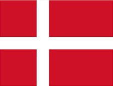

丹麥 (Denmark)介紹

首都 Capital
哥本哈根。
語言 Language
丹麥語。 認可的地方語言: 法羅語、格陵蘭語、德語。
時差 jet lag
台灣時間-7。(夏季時間-6)
貨幣 Currency
丹麥克朗（DKK）。
電壓 Voltage
為220伏特，插座及插頭均為圓形雙頭雙孔。
歷史 History
西元1375年丹麥在瑪格莉特女王帶領下，轄有瑞典、挪威、冰島等地，奠定國基；西元1523年瑞典脫離丹麥獨立；西元1813年將挪威讓與瑞典；西元1944年冰島脫離丹麥正式獨立；丹麥現今實行民主憲政。丹麥是童話大師安徒生的祖國，西元1913年在哥本哈根雕塑完成的美人魚銅像成為丹麥的象徵。
國土特性 Territorial characteristics
丹麥由日德蘭半島與其他4百多個大小島嶼所組成，海外的領土還包括有北大西洋的法羅群島和格陵蘭島(世界的第一大島)。境內多為低地，海拔最高不過173公尺，有肥泊的農地、丘陵、溼地、沼澤及樹林分布在國土中。
氣候 Climate
1月和2月平均溫度達0℃；每年的5~8月陽光溫暖充足，是最適合旅行的季節，8月平均溫度為15℃； 秋季濕潤而春天乾燥。全年有121日降雨天。由於丹麥地處北方，不同季節時長變化極大。冬季時長最短時太陽可晚至8:45升起，早至下午3:45日落；夏季時長最長時太陽早至4:30升起，晚至11點日落。
文化 Culture
丹麥的國旗日為6月15日。丹麥國旗是世界上最古老的，被稱為「丹麥人的力量」。2月底懺悔節，過去這是宗教齋戒期的前夜，現在是孩子們盛裝打扮的一個有趣的狂歡節日。這天，孩子們會穿上各種色彩華麗、樣式古怪的服裝，他們還會聚集一堂，輪流用棒球球棒敲一個懸掛著的大木桶，當木桶被打破時，裡面的糖果糕點滾落出來，而打破桶的幸運孩子就成為齋戒期的「國王」或「王后」。